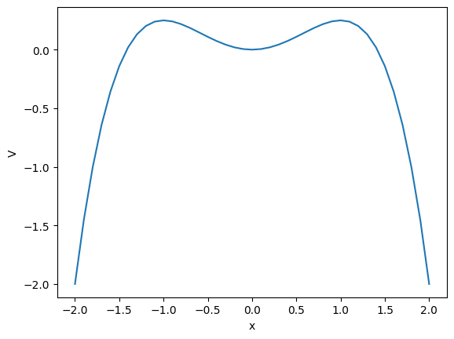

Homework 4 (Due 09 Feb)#
Solution Homework 4, Spring 2024
Exercise 1 (10 pt), Conservation laws, Energy and momentum#
1a (2pt) How do we define a conservative force? Explain in words and indicate what property/properties must be fulfilled.
SOLUTION
A conservative force is a force whose property is that the total work done in moving an object between two points is independent of the taken path. This means that the work on an object under the influence of a conservative force, is independent on the path of the object. It depends only on the spatial degrees of freedom and it is possible to assign a numerical value for the potential at any point. It leads to conservation of energy. The gravitational force is an example of a conservative force.
If you wish to read more about conservative forces or not, Feyman’s lectures from 1963 are quite interesting. He states for example that All fundamental forces in nature appear to be conservative. This statement was made while developing his argument that there are no nonconservative forces. You may enjoy the link to Feynman’s lecture.
An important condition for the final work to be independent of the path is that the curl of the force is zero, that
1b (4pt) Use the work-energy theorem to show that energy is conserved with a conservative force.
SOLUTION
The work-energy theorem states that the work done \(W\) by a force \(\boldsymbol{F}\) that moves an object from a position \(\boldsymbol{r}_0\) to a new position \(\boldsymbol{r}_1\) is equal to the change in kinetic energy of the object:
where \(v_1^2\) is the velocity squared at a time \(t_1\) and \(v_0^2\) the corresponding quantity at a time \(t_0\). This work need not be path independent, that is for different paths that start and end at the same location, we might see different final kinetic energies. However, if \(\mathbf{F}\) is a conservative force, then the work done by that force is path independent. More importantly, it means that there’s no change in potential energy for any closed path, that is,
for any closed path \(C\). So that if we start and end at the same location, the work done by a conservative force is zero. So we can see that energy is conserved before and after this action:
Thus no change in kinetic energy. This means that the total energy is conserved in such a process.
1c (4pt) Assume that you have only internal two-body forces acting on \(N\) objects in an isolated system. The force from object \(i\) on object \(j\) is \(\boldsymbol{f}_{ij}\). Show that the linear momentum is conserved.
SOLUTION
Here we use Newton’s third law and assume that our system is only affected by so-called internal forces. This means that the force \(\boldsymbol{f}_{ij}\) from object \(i\) acting on object \(j\) is equal to the force acting on object \(j\) from object \(i\) but with opposite sign, that is \(\boldsymbol{f}_{ij}=-\boldsymbol{f}_{ji}\).
The total linear momentum for a system is the sum of all the individual momenta:
where \(i\) runs over all objects, \(m_i\) is the mass of object \(i\) and \(\boldsymbol{v}_i\) its corresponding velocity.
The force acting on object \(i\) from all the other objects is (lower case letters for individual objects and upper case letters for total quantities)
Summing over all objects the net force is
We are summing freely over all objects with the constraint that \(i\ne j\) (there are no self-interactions; self-forces). We can now manipulate the double sum.
Rewriting the double sum as Newton’s third law pairs
This technique is clever because it works incredibly well in a computational algorithm when you need to exclude self interactions. Here the idea is that you start with the one agent, add up all the pairwise interactions that agent has with all the others, then move to the next one excluding the first one from consideration (as you took care of that already). Mathematically, that means that we can write the double sum as
Really try to convince yourself about this algorithmic process by setting \(N=2\) and \(N=3\).
Next, Newton’s third law says \(\boldsymbol{f}_{ij}=-\boldsymbol{f}_{ji}\), which means we have
The total force due to internal degrees of freedom only is thus \(0\). If we then use the definition that
where we assumed that \(m_i\) is independent of time, we see that time derivative of the total momentum is zero. We say then that the linear momentum is a constant of the motion. It is conserved. It also makes sense that the net force is zero. It is the net external force that changes the momentum of the system. If there are no external forces, the momentum is conserved.
Exercise 2 (10 pt), Conservation of angular momentum#
2a (2pt) Define angular momentum and the torque for a single object with external forces only.
SOLUTION
The angular moment \(\boldsymbol{l}_i\) for a given object \(i\) is defined as
where \(\boldsymbol{p}_i=m_i\boldsymbol{v}_i\). With external forces only defining the acceleration and the mass being time independent, the momentum is the integral over the external force as function of time, that is
The torque for one object is
2b (4pt) Define angular momentum and the torque for a system with \(N\) objects/particles with external and internal forces. The force from object \(i\) on object \(j\) is \(\boldsymbol{F}_{ij}\). Let external forces on the \(i\)-th particle be \(\boldsymbol{F}_{\mathrm{ext},i}\)
SOLUTION
The total angular momentum \(\boldsymbol{L}\) is defined as
and the total torque is (using the expression for one object from 2a)
The force acting on one object is \(\boldsymbol{f}_i=\boldsymbol{f}_i^{\mathrm{ext}}+\sum_{j=1}^N\boldsymbol{f}_{ji}\).
2c (4pt) With internal forces only, what is the mathematical form of the forces that allows for angular momentum to be conserved?
SOLUTION
Using the results from 1c, we can rewrite without external forces our torque as
which gives
REMINDER
We can rewrite this sum. This is a modification of the double sum we had in 1c. Now we have the cross product to include. Note that the vector \(\boldsymbol{r}_j\) is the vector pointing from the origin to the position of object \(j\).
and using Newton’s third law we have
If the force is proportional to \(\boldsymbol{r}_i -\boldsymbol{r}_j\) then angular momentum is conserved since the cross-product of a vector with itself is zero. We say thus that angular momentum is a constant of the motion. This can be the case for the gravitational force and the Coulomb force where the interactions are proportional to the distance between the objects.
Exercise 3 (10pt), Example of potential#
Consider a particle of mass \(m\) moving according to the potential
3a (2pt) Is energy conserved? If so, why?
SOLUTION
In this exercise \(A\) and \(a\) are constants. The force is given by the derivative of \(V\) with respect to the spatial degrees of freedom and since the potential depends only on position, the force is conservative and energy is conserved. Furthermore, the curl of the force is zero. To see this we need first to compute the derivatives of the potential with respect to \(x\), \(y\) and \(z\). We have that
and
and
The components of the curl of \(\boldsymbol{F}\) are
and
and
The force is a conservative one.
3b (4pt) Which of the quantities, \(p_x,p_y,p_z\) are conserved?
SOLUTION
Taking the derivatives with respect to time shows that only \(p_y\) is conserved We see this directly from the above expressions for the force, since the derivative with respect to time of the momentum is simply the force. Thus, only the \(y\)-component of the momentum is conserved, see the expressions above for the forces,
For the next exercise (3c), we need also the following derivatives
and
and
3c (4pt) Which of the quantities, \(L_x,L_y,L_z\) are conserved?
SOLUTION
Using that \(\boldsymbol{L}=\boldsymbol{r}\times\boldsymbol{p}\) and that
we have that the different components are
and
and
Only \(L_y\) is conserved.
Exercise 4 (10pt), Angular momentum case#
At \(t=0\) we have a single object with position \(\boldsymbol{r}_0=x_0\boldsymbol{e}_x+y_0\boldsymbol{e}_y\). We add also a force in the \(x\)-direction at \(t=0\). We assume that the object is at rest at \(t=0\).
4a (3pt) Find the velocity and momentum at a given time \(t\) by integrating over time with the above initial conditions.
SOLUTION
There is no velocity in the \(x\)- and \(y\)-directions at \(t=0\), thus \(\boldsymbol{v}_0=0\). The force is constant and acting only in the \(x\)-direction. We have then (dropping vector symbols and setting \(t_0=0\))
4b (3pt) Find also the position at a time \(t\).
SOLUTION
In the \(x\)-direction we have then
resulting in
4c (4pt) Use the position and the momentum to find the angular momentum and the torque. Is angular momentum conserved?
SOLUTION
Velocity and position are defined in the \(xy\)-plane only which means that only angular momentum in the \(z\)-direction is non-zero. The angular momentum is
which results in a torque \(\boldsymbol{\tau}=-y_0\frac{F}{m}\boldsymbol{e}_z\), which is not zero. Thus, angular momentum is not conserved.
Exercise 5 (10pt), forces and potentials#
A particle of mass \(m\) has velocity \(v=\alpha/x\), where \(x\) is its displacement.
5a (3pt) Find the force \(F(x)\) responsible for the motion.
SOLUTION
Here, since the force is assumed to be conservative (only dependence on \(x\)), we can use energy conservation. Assuming that the total energy at \(t=0\) is \(E_0\), we have
Taking the derivative wrt \(x\) we have
and since \(F(x)=-dV/dx\) we have
A particle is thereafter under the influence of a force \(F=-kx+kx^3/\alpha^2\), where \(k\) and \(\alpha\) are constants and \(k\) is positive.
5b (3pt) Determine \(V(x)\) and discuss the motion. It can be convenient here to make a sketch/plot of the potential as function of \(x\).
SOLUTION
We assume that the potential is zero at say \(x=0\). Integrating the force from zero to \(x\) gives
The following code plots the potential. We have chosen values of \(\alpha=k=1.0\). Feel free to experiment with other values. We plot \(V(x)\) for a domain of \(x\in [-2,2]\).
%matplotlib inline
import numpy as np
import matplotlib.pyplot as plt
import math
x0= -2.0
xn = 2.1
Deltax = 0.1
alpha = 1.0
k = 1.0
#set up arrays
x = np.arange(x0,xn,Deltax)
n = np.size(x)
V = np.zeros(n)
V = 0.5*k*x*x-0.25*k*(x**4)/(alpha*alpha)
plt.plot(x, V)
plt.xlabel("x")
plt.ylabel("V")
plt.show()
Show code cell source
%matplotlib inline
import numpy as np
import matplotlib.pyplot as plt
import math
x0= -2.0
xn = 2.1
Deltax = 0.1
alpha = 1.0
k = 1.0
#set up arrays
x = np.arange(x0,xn,Deltax)
n = np.size(x)
V = np.zeros(n)
V = 0.5*k*x*x-0.25*k*(x**4)/(alpha*alpha)
plt.plot(x, V)
plt.xlabel("x")
plt.ylabel("V")
plt.show()

SOLUTION CONT’D
From the plot here (with the chosen parameters)
we see that with a given initial velocity we can overcome the potential energy barrier
and leave the potential well for good.
If the initial velocity is smaller (see next exercise) than a certain value, it will remain trapped in the potential well and oscillate back and forth around \(x=0\). This is where the potential has its minimum value.
If the kinetic energy at \(x=0\) equals the maximum potential energy, the object will oscillate back and forth between the minimum potential energy at \(x=0\) and the turning points where the kinetic energy turns zero. These are the so-called non-equilibrium points.
5c (4pt) What happens when the energy of the particle is \(E=(1/4)k\alpha^2\)? Hint: what is the maximum value of the potential energy?
From the figure we see that the potential has a minimum at at \(x=0\) then rises until \(x=\alpha\) before falling off again. The maximum potential, \(V(x\pm \alpha) = k\alpha^2/4\). If the energy is higher, the particle cannot be contained in the well. The turning points are thus defined by \(x=\pm \alpha\). And from the previous plot you can easily see that this is the case (\(\alpha=1\) in the aforementioned Python code).
Exercise 6 (40pt), Numerical elements, adding the bouncing from the floor to the code from hw 3#
This exercise should be handed in as a jupyter-notebook at D2L. Remember to write your name(s).
Till now we have only introduced gravity and air resistance and studied their effects via a constant acceleration due to gravity and the force arising from air resistance. But what happens when the ball hits the floor? What if we would like to simulate the normal force from the floor acting on the ball?
We need then to include a force model for the normal force from the floor on the ball. The simplest approach to such a system is to introduce a contact force model represented by a spring model. We model the interaction between the floor and the ball as a single spring. But the normal force is zero when there is no contact. Here we define a simple model that allows us to include such effects in our models.
The normal force from the floor on the ball is represented by a spring force. This is a strong simplification of the actual deformation process occurring at the contact between the ball and the floor due to the deformation of both the ball and the floor.
The deformed region corresponds roughly to the region of overlap between the ball and the floor. The depth of this region is \(\Delta y = R − y(t)\), where \(R\) is the radius of the ball. This is supposed to represent the compression of the spring. Our model for the normal force acting on the ball is then
The normal force must act upward when \(y < R\), hence the sign must be negative. However, we must also ensure that the normal force only acts when the ball is in contact with the floor, otherwise the normal force is zero. The full formation of the normal force is therefore
when \(y(t) < R\) and zero when \(y(t) \le R\). In the numerical calculations you can choose \(R=0.1\) m and the spring constant \(k=1000\) N/m.
6a (10pt) Identify the forces acting on the ball and set up a diagram with the forces acting on the ball. Find the acceleration of the falling ball now with the normal force as well.
6b (30pt) Choose a large enough final time so you can study the ball bouncing up and down several times. Add the normal force and compute the height of the ball as function of time with and without air resistance. Comment your results.
For 6a, see Malthe-Sørenssen chapter 7.5.1, in particular figure 7.10. The forces are in equation (7.10). The following code shows how to set up the problem with gravitation, a drag force and a normal force from the ground. The normal force makes the ball bounce up again.
SOLUTION
The code here includes all forces. Commenting out the air resistance will result in a ball which bounces up and down to the same height. Furthermore, you will note that for larger values of \(\Delta t\) the results will not be physically meaningful. Can you figure out why? Try also different values for the step size in order to see whether the final results agrees with what you expect.
# Exercise 6, hw4, smarter way with declaration of vx, vy, x and y
# Here we have added a normal force from the ground
# Common imports
import numpy as np
import pandas as pd
from math import *
import matplotlib.pyplot as plt
import os
# Where to save the figures and data files
PROJECT_ROOT_DIR = "Results"
FIGURE_ID = "Results/FigureFiles"
DATA_ID = "DataFiles/"
if not os.path.exists(PROJECT_ROOT_DIR):
os.mkdir(PROJECT_ROOT_DIR)
if not os.path.exists(FIGURE_ID):
os.makedirs(FIGURE_ID)
if not os.path.exists(DATA_ID):
os.makedirs(DATA_ID)
def image_path(fig_id):
return os.path.join(FIGURE_ID, fig_id)
def data_path(dat_id):
return os.path.join(DATA_ID, dat_id)
def save_fig(fig_id):
plt.savefig(image_path(fig_id) + ".png", format='png')
from pylab import plt, mpl
plt.style.use('ggplot')
mpl.rcParams['font.family'] = 'serif'
# Define constants
g = 9.80655 #in m/s^2
D = 0.0245 # in mass/length, kg/m
m = 0.2 # in kg
R = 0.1 # in meters
k = 1000.0 # in mass/time^2
# Define Gravitational force as a vector in x and y, zero x component
G = -m*g*np.array([0.0,1])
DeltaT = 0.001
#set up arrays
tfinal = 15.0
n = ceil(tfinal/DeltaT)
# set up arrays for t, v, and r, the latter contain the x and y comps
t = np.zeros(n)
v = np.zeros((n,2))
r = np.zeros((n,2))
# Initial conditions
r0 = np.array([0.0,2.0])
v0 = np.array([10.0,10.0])
r[0] = r0
v[0] = v0
# Start integrating using Euler's method
for i in range(n-1):
# Set up forces, air resistance FD
if ( r[i,1] < R):
N = k*(R-r[i,1])*np.array([0,1])
else:
N = np.array([0,0])
vabs = sqrt(sum(v[i]*v[i]))
FD = -D*v[i]*vabs
Fnet = FD+G+N
a = Fnet/m
# update velocity, time and position
v[i+1] = v[i] + DeltaT*a
r[i+1] = r[i] + DeltaT*v[i]
t[i+1] = t[i] + DeltaT
fig, ax = plt.subplots()
ax.set_xlim(0, tfinal)
ax.set_ylabel('y[m]')
ax.set_xlabel('x[m]')
ax.plot(r[:,0], r[:,1])
fig.tight_layout()
save_fig("BouncingBallEuler")
plt.show()
Show code cell source
# Exercise 6, hw4, smarter way with declaration of vx, vy, x and y
# Here we have added a normal force from the ground
# Common imports
import numpy as np
import pandas as pd
from math import *
import matplotlib.pyplot as plt
import os
# Where to save the figures and data files
PROJECT_ROOT_DIR = "Results"
FIGURE_ID = "Results/FigureFiles"
DATA_ID = "DataFiles/"
if not os.path.exists(PROJECT_ROOT_DIR):
os.mkdir(PROJECT_ROOT_DIR)
if not os.path.exists(FIGURE_ID):
os.makedirs(FIGURE_ID)
if not os.path.exists(DATA_ID):
os.makedirs(DATA_ID)
def image_path(fig_id):
return os.path.join(FIGURE_ID, fig_id)
def data_path(dat_id):
return os.path.join(DATA_ID, dat_id)
def save_fig(fig_id):
plt.savefig(image_path(fig_id) + ".png", format='png')
from pylab import plt, mpl
plt.style.use('ggplot')
mpl.rcParams['font.family'] = 'serif'
# Define constants
g = 9.80655 #in m/s^2
D = 0.0245 # in mass/length, kg/m
m = 0.2 # in kg
R = 0.1 # in meters
k = 1000.0 # in mass/time^2
# Define Gravitational force as a vector in x and y, zero x component
G = -m*g*np.array([0.0,1])
DeltaT = 0.001
#set up arrays
tfinal = 15.0
n = ceil(tfinal/DeltaT)
# set up arrays for t, v, and r, the latter contain the x and y comps
t = np.zeros(n)
v = np.zeros((n,2))
r = np.zeros((n,2))
# Initial conditions
r0 = np.array([0.0,2.0])
v0 = np.array([10.0,10.0])
r[0] = r0
v[0] = v0
# Start integrating using Euler's method
for i in range(n-1):
# Set up forces, air resistance FD
if ( r[i,1] < R):
N = k*(R-r[i,1])*np.array([0,1])
else:
N = np.array([0,0])
vabs = sqrt(sum(v[i]*v[i]))
FD = -D*v[i]*vabs
Fnet = FD+G+N
a = Fnet/m
# update velocity, time and position
v[i+1] = v[i] + DeltaT*a
r[i+1] = r[i] + DeltaT*v[i]
t[i+1] = t[i] + DeltaT
fig, ax = plt.subplots()
ax.set_xlim(0, tfinal)
ax.set_ylabel('y[m]')
ax.set_xlabel('x[m]')
ax.plot(r[:,0], r[:,1])
fig.tight_layout()
save_fig("BouncingBallEuler")
plt.show()
---------------------------------------------------------------------------
ModuleNotFoundError Traceback (most recent call last)
Cell In[2], line 5
1 # Exercise 6, hw4, smarter way with declaration of vx, vy, x and y
2 # Here we have added a normal force from the ground
3 # Common imports
4 import numpy as np
----> 5 import pandas as pd
6 from math import *
7 import matplotlib.pyplot as plt
ModuleNotFoundError: No module named 'pandas'